原文连接:https://www.cnblogs.com/cxydmx/p/11734061.html
单个mysql数据库在处理业务的时候肯定是有限的，这时我们扩展数据库的第一种方式就是对数据库做读写分离（主从复制）,本文我们就先来介绍下怎么来实现mysql的主从复制操作。
1. 读写分离
原理：需要搭建主从模式，让主数据库（master）处理事务性增、改、删操作（INSERT、UPDATE、DELETE），而从数据库（slave）处理 SELECT 查询操作。
Mycat 配合数据库本身的复制功能，可以解决读写分离的问题。
2.主从备份概念
什么是主从备份: 就是一种主备模式的数据库应用.
主库(Master)数据与备库(Slave)数据完全一致.
实现数据的多重备份, 保证数据的安全.
可以在 Master[InnoDB]和 Slave[MyISAM]中使用不同的数据库引擎,实现读写的分离
InnoDB:支持事务处理
MyISAM:不支持事务处理
2.1 MySQL5.5, 5.6 版本后本身支持主从备份
在老旧版本的 MySQL 数据库系统中,不支持主从备份,需要安装额外的 RPM 包.如果需要安装 RPM,只能在一个位置节点安装.
2.2 主从备份目的
2.2.1 实现主备模式
保证数据的安全. 尽量避免数据丢失的可能.
2.2.2 实现读写分离
使用不同的数据库引擎,实现读写分离.提高所有的操作效率.
InnoDB 使用 DML 语法操作. MyISAM 使用 DQL 语法操作.
2.3 主从备份效果
2.3.1 主库操作同步到备库
所有对 Master 的操作,都会同步到 Slave 中.如果 Master 和 Salve 天生上环境不同,那么对 Master 的操作,可能会在 Slave 中出现错误如: 在创建主从模式之前,Master 有 database : db1, db2, db3. Slave 有 database: db1, db2.创建主从模式.现在的情况 Master 和 Slave 天生不同.主从模式创建成功后,在 Master 中 drop database db3. Slave 中抛出数据库 SQL 异常.后续所有的命令不能同步.一旦出现错误. 只能重新实现主从模式.
2.4 主从模式下的逻辑图
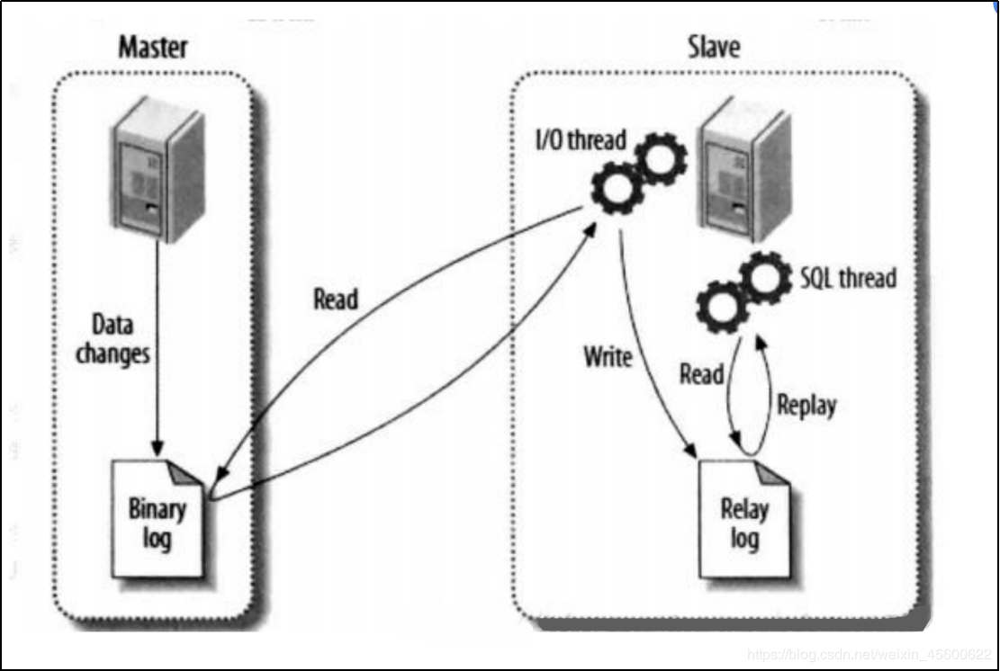
3. MySQL主从模式搭建
3.1 安装MYSQL
mysql安装教程:
https://blog.csdn.net/weixin_45600622/article/details/102647528
环境地址：
主节点：192.168.88.180
从节点：192.168.88.181
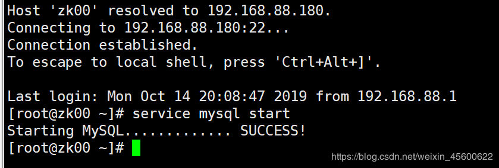
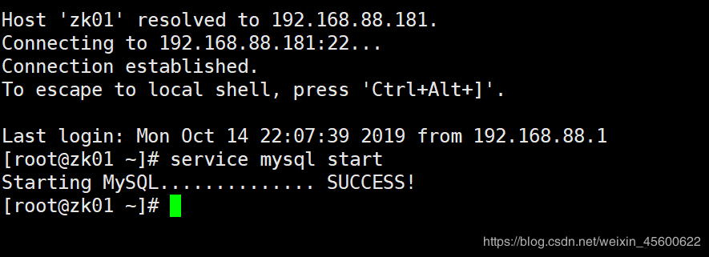
3.2 主库配置修改(Master)
路径：/etc/my.cnf
3.2.1 server_id配置
本环境中 server_id 是 1
MySQL 服务唯一标识
配置要求：
server_id 任意配置,只要是数字即可
server_id Master 唯一标识数字必须小于 Slave 唯一标识数字.
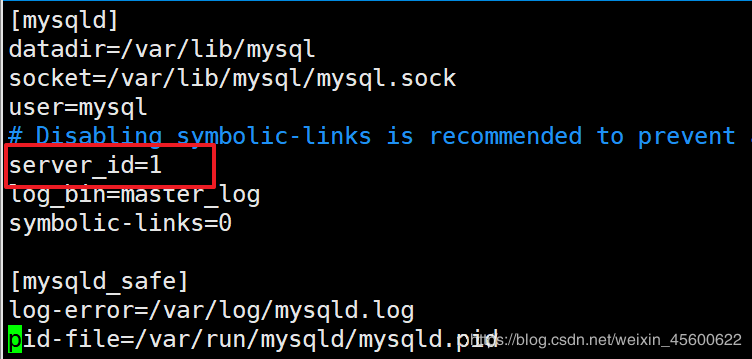
3.2.2 log_bin配置
本环境中 log_bin 值 : master_log
开启日志功能以及日志文件命名,log_bin=master_log
变量的值就是日志文件名称.是日志文件名称的主体.
MySQL 数据库自动增加文件名后缀和文件类型.
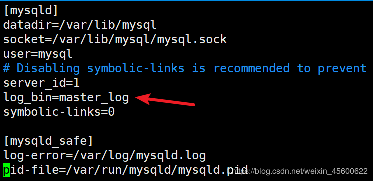
3.2.3 重启mysql
service mysql restart
3.2.4 登录mysql
从mysql的安装路径下进入
./bin/mysql -uroot -h127.0.0.1 -p123456
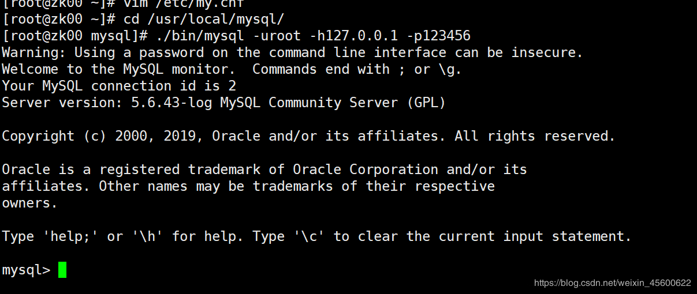
3.2.5 创建用户
在 MySQL 数据库中,为不存在的用户授权,就是同步创建用户并授权.
此用户是从库访问主库使用的用户
ip 地址不能写为%. 因为主从备份中,当前创建的用户,是给从库 Slave 访问主库 Master使用的.用户必须有指定的访问地址.不能是通用地址.
grant all privileges on *.* to ‘username’@’ip’ identified by ‘password’ with grant option;
flush privileges;
grant all privileges on *.* to 'myslave'@'192.168.88.181' identified by 'myslave' with grant
option;
flush privileges;
3.2.6 查看用户
use mysql;
select host, user from user;
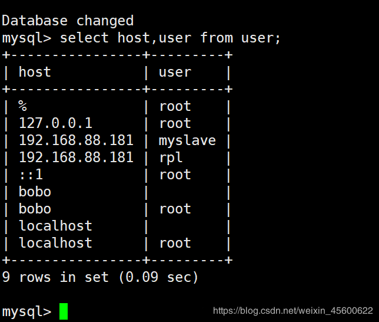
3.2.7 查看 Master 信息
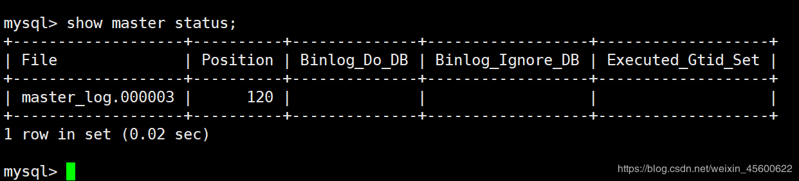
master_log.00003就是主从复制中从数据库要读取的日志文件。
注意:关闭防火墙或在防火墙中开放 3306 端口
3.3 从库配置修改(slave)
3.3.1 修改my.cnf的server_id
从库的 server_id要比主库中的server_id的值要大
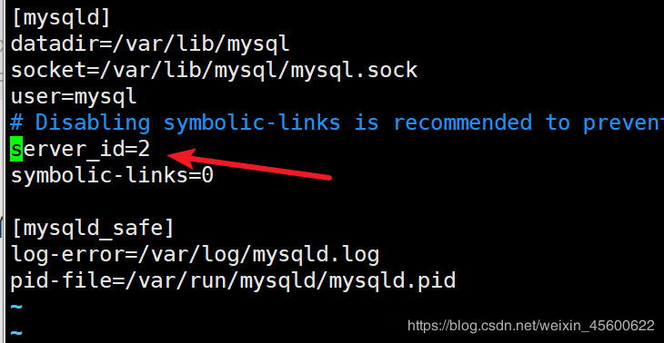
然后重启mysql服务
3.3.2 连接mysql服务
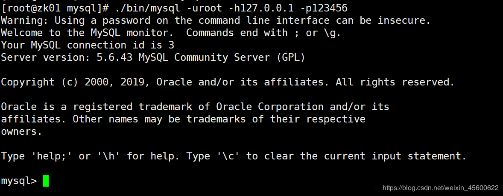
3.3.3 停止 Slave 功能
stop slave
3.3.4 配置主库信息
需要修改的数据是依据 Master 信息修改的.ip 是 Master 所在物理机 IP. 用户名和密码是Master 提供的 Slave 访问用户名和密码. 日志文件是在 Master 中查看的主库信息提供的.在Master 中使用命令 show master status 查看日志文件名称.
change master to master_host=’ip’, master_user=’username’, master_password=’password’, master_log_file=’log_file_name’;
3.3.5 启动 Slave 功能
start slave;
3.3.6 查看 Slave 配置
show slave status \G; # \G 行转列
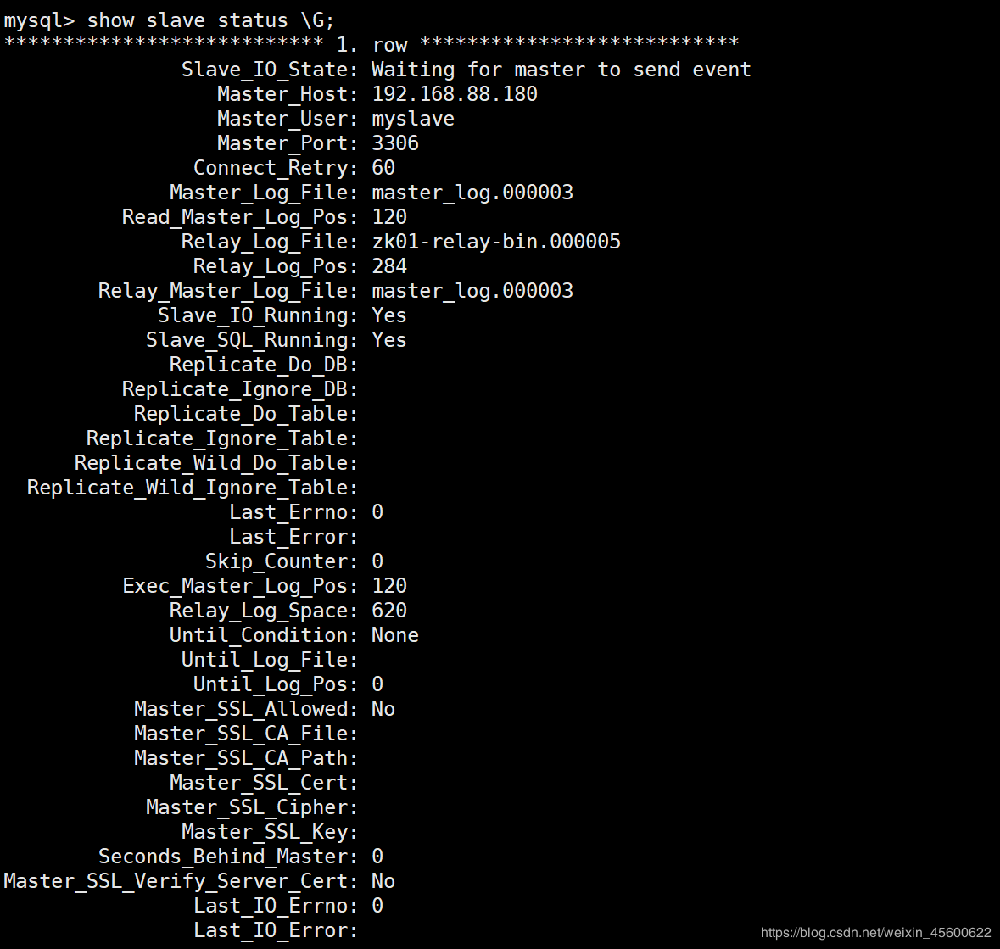
注意:如果输出中有如下提示：
Last_IO_Error: Fatal error: The slave I/O thread stops because master and slave have equal MySQL server ids; these ids must be different for replication to work (or the –replicate-same-server-id option must be used on slave but this does not always make sense; please check the manual before using it).
原因是以为两个数据库是克隆出来的，所以uuid是一致的，这时只需要删除掉一个uuid即可，具体如下：
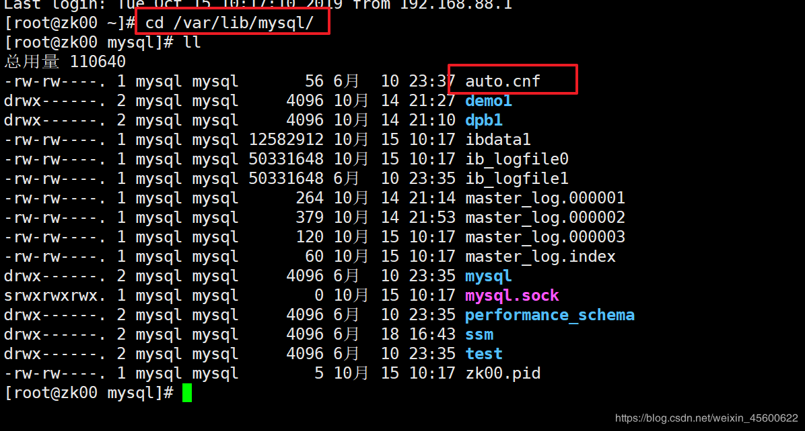
把auto.cnf 注释掉或者删除掉，重启mysql就会重新分配！
4. 主从测试
4.1 创建数据库同步
在master上新建一个数据库，然后查看slave中是否也有即可
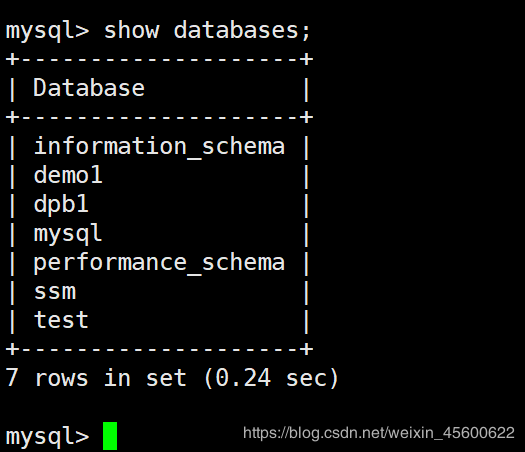
create database demo2 default character set utf8;
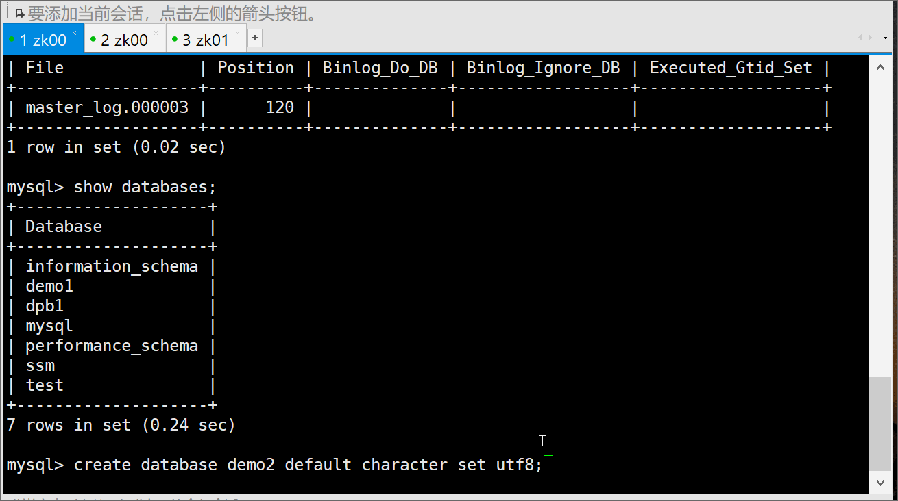
4.2 创建table同步
create table t_user (id varchar(20),name varchar(20));
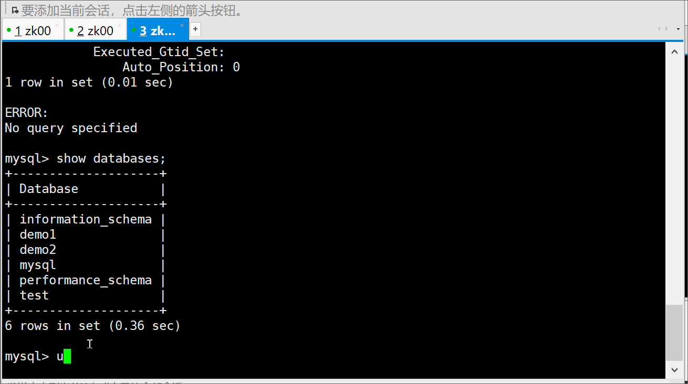
4.3 数据操作同步
insert into t_user (id,name)values('666','cxydmx');
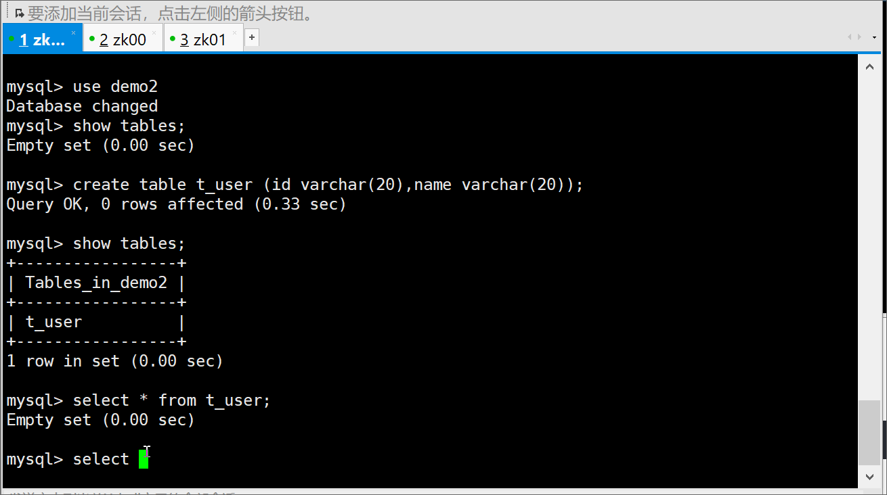
通过演示我们发现主数据库的修改会及时的同步到从数据库，这样mysql的主从配置就OK了，好了本文就到此，下篇来详细介绍一下MyCat的安装与配置
关注微信公众号【程序员的梦想】，专注于Java，SpringBoot，SpringCloud，微服务，Docker以及前后端分离等全栈技术。